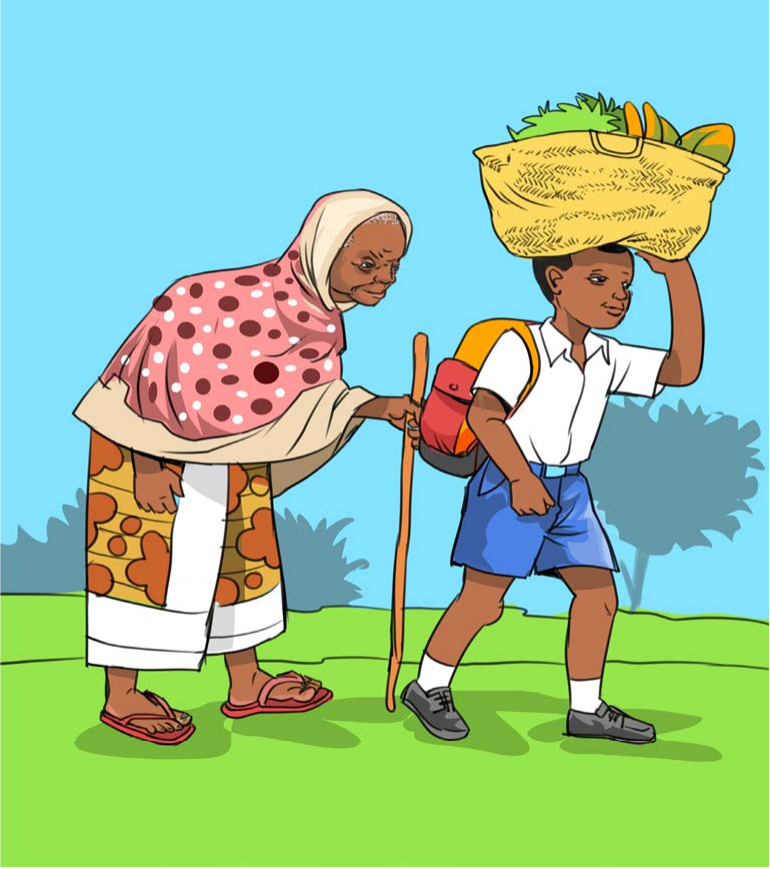
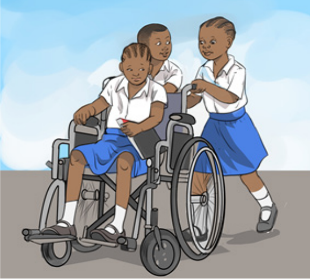
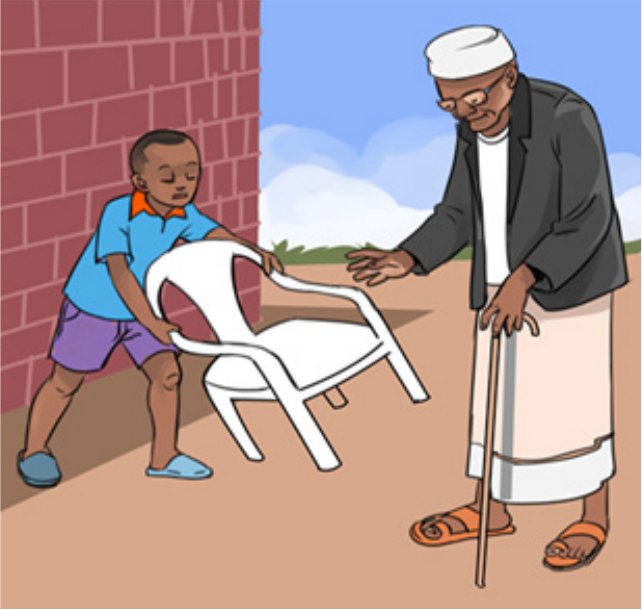
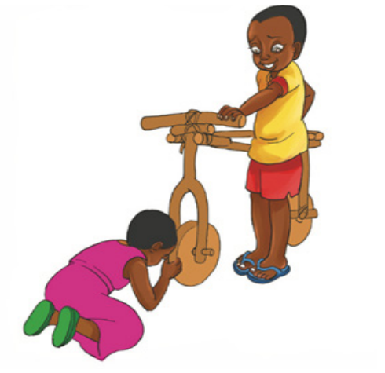

1. Eleza mambo yanayofanyika katika picha (a), (b), (c) na (d).

Mwanafunzi amebeba kikapu cha mboga kichwani na mkoba mgongoni huku akimsaidia bibi anayetembea kwa fimbo.

Wanafunzi wawili wanasukuma kiti cha magurudumu ambacho ameketi mwanafunzi mwenzao.

Mtoto anasukuma kiti cha plastiki kuelekea kwa mzee anayetembea kwa fimbo ili mzee apate kuketi.

Watoto wawili wanashirikiana kwenye kifaa cha kuchezea kilichotengenezwa kwa mbao; mmoja amesimama akikishika na mwingine amepiga magoti akirekebisha gurudumu.